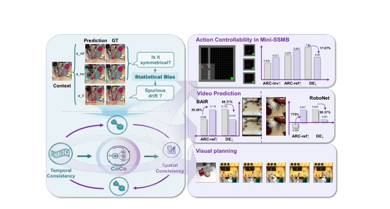
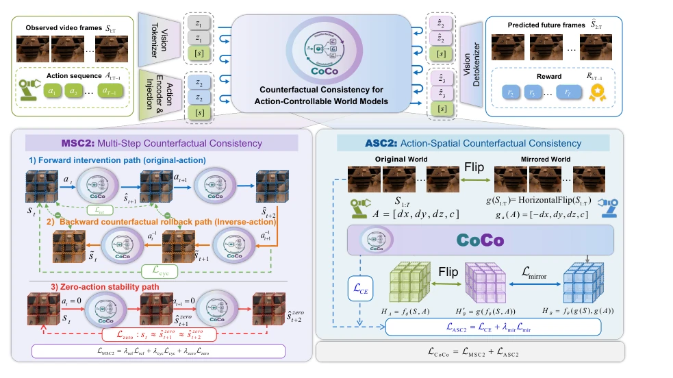
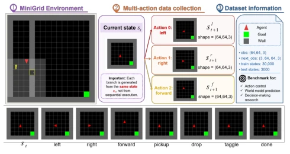
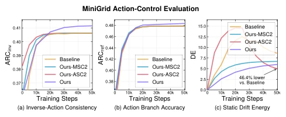
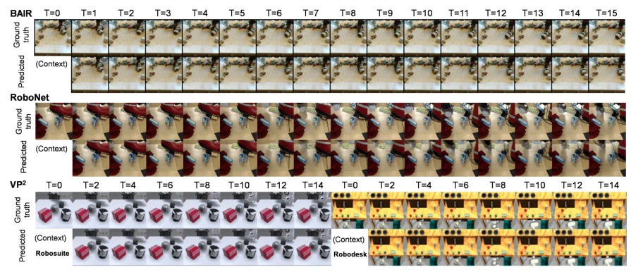
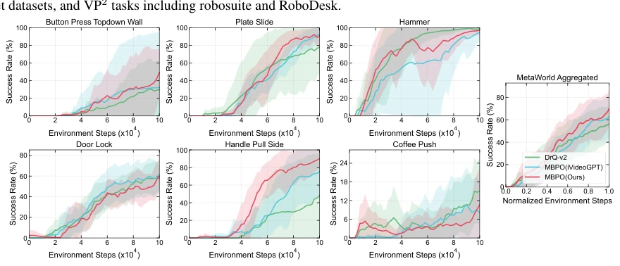

Overcoming Statistical Bias in Action-Controllable World Models
Yuhong Shi, Zhenhao Chu, Jie Wei, Jun Hao, Jianyi Liu, Jingwen Fu abspdf
论文点评Review
这篇论文直击动作可控世界模型的痛点：模型往往只是“视频生成器”，靠视觉惯性偷懒，根本不听指挥。CoCo 框架通过反事实一致性约束，强迫模型在动作改变时真正改变预测，而不是靠统计捷径。虽然 ARC 和 DE 指标设计得挺巧妙，能直接量化动作响应，但依赖预设的空间变换（如水平翻转）在复杂物理交互中可能不够通用，比如不可逆接触。计算开销增加是代价，不过对于需要可靠模拟器的具身智能来说，这钱花得值。毕竟，能预测未来不代表能控制未来，这篇工作把“预测”和“控制”的界限划得更清了，但也暴露了现有数据驱动方法在因果性上的先天不足。它提醒我们，高保真视频不代表高可控性，因果性才是关键，否则规划器就是瞎子。
This paper directly targets the pain point of action-controllable world models: models often merely serve as "video generators", relying on visual inertia to take shortcuts, fundamentally disregarding commands. The CoCo framework, via counterfactual consistency constraints, compels the model to genuinely alter predictions when actions change, rather than relying on statistical shortcuts. Although the ARC and DE metrics are cleverly designed to directly quantify action responses, reliance on preset spatial transformations (such as horizontal flipping) may lack generality in complex physical interactions, such as irreversible contact. The increased computational overhead is the price, but for embodied intelligence requiring reliable simulators, this cost is justified. After all, the ability to predict the future does not equate to the ability to control the future; this work clarifies the boundary between "prediction" and "control" more distinctly, yet also exposes the inherent deficiencies of existing data-driven methods regarding causality. It reminds us that high-fidelity video does not imply high controllability; causality is the key, otherwise the planner is effectively blind.
研究动机Motivation
现有动作条件世界模型（如 Wu et al. 2024; Wang et al. 2024）主要优化观测数据的预测误差，导致模型利用数据中的统计偏差（如视觉惯性）而非因果动作来预测未来。这造成不同动作产生相似结果，零动作下仍有漂移。Pan and Bareinboim (2024) 指出观测监督无法识别动作的因果效应。Li et al. (2025b) 也提到模型可能生成逼真视频却无法用于决策。因此，缺乏反事实约束是核心缺陷，导致规划器无法区分替代动作的后果。现有方法虽增强动作注入，但未解决监督缺失问题，模型仍依赖数据集相关性而非真实动力学。这使得模型在离线数据上表现良好，但在需要反事实推理的规划任务中失效，无法真正模拟干预后的环境变化。
Existing action-conditioned world models (e.g., Wu et al. 2024; Wang et al. 2024) primarily optimize prediction errors of observation data, leading models to utilize statistical biases in the data (such as visual inertia) rather than causal actions to predict the future. This results in similar outcomes for different actions, with drift still occurring under zero actions. Pan and Bareinboim (2024) point out that observation supervision cannot identify the causal effects of actions. Li et al. (2025b) also mention that models may generate realistic videos but cannot be used for decision-making. Therefore, the lack of counterfactual constraints is a core defect, causing planners to be unable to distinguish the consequences of alternative actions. Although existing methods enhance action injection, they do not solve the problem of missing supervision; models still rely on dataset correlations rather than true dynamics. This makes models perform well on offline data but fail in planning tasks requiring counterfactual reasoning, unable to truly simulate environmental changes after interventions.

Figure 1: Motivation and overview of CoCo. Existing mod- els are affected by statistical biases, resulting in asymmetric responses between reference and inverse actions, as well as spurious drift in zero actions. CoCo mitigates these statistical shortcuts by simultaneously enforcing counterfactual consis- tency in both temporal and spatial dimensions.
Overall based on a Transformer-based autoregressive generation architecture, inputting video tokens and action sequences. CoCo introduces two core constraints: 1) MSC2 (Multi-step Counterfactual Consistency): includes reference action forward prediction, inverse action rollback (verifying reversibility), and zero-action stability (suppressing drift). Through cyclic constraints, it ensures action sequences are reversible, zero actions maintain state unchanged, preventing meaningless motion. 2) ASC2 (Action Space Counterfactual Consistency): utilizes horizontally mirrored scenes and transformed actions to force model predictions to possess spatial equivariance. That is, the prediction of mirrored input + mirrored action should equal the mirror of the original prediction. The loss function combines reconstruction loss with counterfactual constraints, ensuring action semantics are consistent across spatiotemporal dimensions, enhancing controllability. Additionally, the Mini-SSMB dataset is proposed for evaluation. Through multi-branch training, the model can better capture the causal impact of actions on state changes, rather than merely fitting visual patterns.

Figure 2: Overview of the CoCo framework. Given observed frames and future actions, a shared action-conditioned Transformer predicts future video tokens, frames, and rewards. MSC2 improves temporal controllability by combining original-action forward prediction, inverse-action rollback, and zero-action stability constraints. ASC2 further enforces spatial action semantics by aligning predictions between the original and horizontally mirrored worlds with correspondingly transformed actions.
Video prediction is conducted on Mini-SSMB, BAIR, RoboNet; VP2 for visual planning; MetaWorld for MBRL. Baselines include iVideoGPT, FitVid, SAMPO, etc. Metrics include ARC and DE in addition to FVD. CoCo achieves ARCinv of 0.412 on Mini-SSMB, DE reduced by 17.07%. VP2 planning success rate of 73.1% leads SOTA. Ablation shows both MSC2 and ASC2 are effective. Although video quality remains competitive, computational cost increases. Results prove counterfactual constraints significantly improve action response and zero-action stability, especially with obvious advantages in long-horizon planning tasks, verifying the value of causal constraints for downstream decision-making. In MBRL tasks, CoCo also demonstrates faster convergence speed, especially on tasks like Button Press.

Figure 3: The overview of the Mini-SSMB Dataset. Mini- SSMB contains 30,000 training and 3,000 test states, each paired with next-frame observations for left, right, and for- ward. Left and right rotate the agent, while forward moves it ahead unless blocked by a wall.

Figure 4: Training dynamics of action-control metrics on Mini-SSMB. Ours-MSC2 and Ours-ASC2 each contain one module, and Ours serves as the full model. The baseline model is presented by iVideoGPT.

Figure 5: Visualization of video prediction results across datasets. We visualize ground-truth and predicted rollouts on BAIR, RoboNet datasets, and VP2 tasks including robosuite and RoboDesk.

Figure 6: Model-based reinforcement learning on MetaWorld. Success rate learning curves on six manipulation tasks and their normalized aggregate. Curves show the mean over five random seeds, and shaded regions denote 95% confidence intervals.